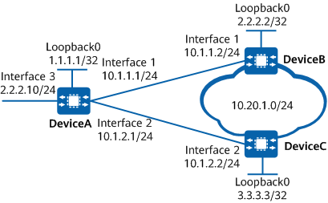

Example for Configuring BGP Next Hop Recursion Based on a Route-Policy
Networking Requirements
As shown in Figure 1, OSPF runs in AS 100, and IBGP peer relationships are established between DeviceA and DeviceB and between DeviceA and DeviceC through loopback 0 interfaces. DeviceB and DeviceC advertise the BGP route 10.20.1.0/24 to DeviceA. Because the router ID of DeviceB is smaller, DeviceA preferentially selects the route 10.20.1.0/24 learned from DeviceB as the optimal route, with the original next hop of 2.2.2.2/32.
In normal cases, DeviceA recurses the BGP route destined for 10.20.1.0/24 to an IGP route destined for 2.2.2.2/32, with 10GE0/0/1 as the outbound interface. If DeviceB is faulty, DeviceA immediately deletes the IGP route destined for 2.2.2.2/32. However, DeviceA still prefers the BGP route with the original next hop of 2.2.2.2/32, as it is not aware of the BGP route change until the BGP hold timer expires. Based on the longest matching rule, DeviceA incorrectly recurses the BGP route destined for 10.20.1.0/24 to the direct route destined for 2.2.2.0/24 with 10GE0/0/3 as the outbound interface, resulting in a loss of traffic.

In this example, interface 1, interface 2, and interface 3 represent 10GE0/0/1, 10GE0/0/2, and 10GE0/0/3, respectively.

To prevent the preceding problem, configure BGP next hop recursion based on a route-policy on DeviceA to control the recursive routes. In this example, only the recursive routes with a mask length of 32 bits match the route-policy, and those that do not match the route-policy are considered unreachable. As such, when DeviceB is faulty, DeviceA can rapidly detect the route change and re-select a correct BGP route with the original next hop of 3.3.3.3/32, preventing traffic loss.
To complete the configuration, you need the following data:
Router ID of DeviceA: 1.1.1.1; router ID of DeviceB: 2.2.2.2; router ID of DeviceC: 3.3.3.3; AS number: 100
Name of the route-policy configured on DeviceA to control route recursion: np-by-rp
Precautions
During the configuration, note the following:
Ensure that all desirable recursive routes match the route-policy. Otherwise, BGP routes may be considered unreachable, unable to guide traffic forwarding.
- To improve security, you are advised to deploy BGP security measures. For details, see "Configuring BGP Authentication." Keychain authentication is used as an example. For details, see Example for Configuring Keychain Authentication for BGP.
Configuration Roadmap
The configuration roadmap is as follows:
Configure OSPF on DeviceA, DeviceB, and DeviceC so that devices in AS 100 can communicate with each other.
Establish IBGP peer relationships between DeviceA and DeviceB and between DeviceA and DeviceC through loopback 0 interfaces.
Enable DeviceB and DeviceC to advertise a BGP route destined for 10.20.1.0/24 to DeviceA.
Configure BGP next hop recursion based on a route-policy on DeviceA. This configuration enables DeviceA to rapidly become aware of the route change when DeviceB is faulty and re-select a correct BGP route, preventing traffic loss.
Procedure
- Assign an IP address to each interface. For detailed configurations, see Configuration Scripts.
- Configure OSPF in AS 100.
# Configure DeviceA.
[DeviceA] ospf 1 [DeviceA-ospf-1] area 0 [DeviceA-ospf-1-area-0.0.0.0] network 1.1.1.1 0.0.0.0 [DeviceA-ospf-1-area-0.0.0.0] network 10.1.0.0 0.0.255.255 [DeviceA-ospf-1-area-0.0.0.0] quit [DeviceA-ospf-1] quit
# Configure DeviceB.
[DeviceB] ospf 1 [DeviceB-ospf-1] area 0 [DeviceC-ospf-1-area-0.0.0.0] network 2.2.2.2 0.0.0.0 [DeviceB-ospf-1-area-0.0.0.0] network 10.1.1.0 0.0.0.255 [DeviceB-ospf-1-area-0.0.0.0] quit [DeviceB-ospf-1] quit
# Configure DeviceC.
[DeviceC] ospf 1 [DeviceC-ospf-1] area 0 [DeviceC-ospf-1-area-0.0.0.0] network 3.3.3.3 0.0.0.0 [DeviceC-ospf-1-area-0.0.0.0] network 10.1.2.0 0.0.0.255 [DeviceC-ospf-1-area-0.0.0.0] quit [DeviceC-ospf-1] quit
- Configure IBGP connections.
# Configure DeviceA.
[DeviceA] bgp 100 [DeviceA-bgp] router-id 1.1.1.1 [DeviceA-bgp] peer 2.2.2.2 as-number 100 [DeviceA-bgp] peer 3.3.3.3 as-number 100 [DeviceA-bgp] peer 2.2.2.2 connect-interface Loopback 0 [DeviceA-bgp] peer 3.3.3.3 connect-interface Loopback 0 [DeviceA-bgp] quit
# Configure DeviceB.
[DeviceB] bgp 100 [DeviceB-bgp] router-id 2.2.2.2 [DeviceB-bgp] peer 1.1.1.1 as-number 100 [DeviceB-bgp] peer 1.1.1.1 connect-interface Loopback 0 [DeviceB-bgp] quit
# Configure DeviceC.
[DeviceC] bgp 100 [DeviceC-bgp] router-id 3.3.3.3 [DeviceC-bgp] peer 1.1.1.1 as-number 100 [DeviceC-bgp] peer 1.1.1.1 connect-interface Loopback 0 [DeviceC-bgp] quit
- Enable DeviceB and DeviceC to advertise a BGP route destined for 10.20.1.0/24.
# Configure DeviceB.
[DeviceB] ip route-static 10.20.1.0 24 NULL 0 [DeviceB] bgp 100 [DeviceB-bgp] import-route static [DeviceB-bgp] quit
# Configure DeviceC.
[DeviceC] ip route-static 10.20.1.0 24 NULL 0 [DeviceC] bgp 100 [DeviceC-bgp] import-route static [DeviceC-bgp] quit
- On DeviceA, configure BGP next hop recursion based on a route-policy.
# Configure DeviceA.
[DeviceA] ip ip-prefix np-by-rp-ip permit 0.0.0.0 32 [DeviceA] route-policy np-by-rp permit node 0 [DeviceA-route-policy] if-match ip-prefix np-by-rp-ip [DeviceA-route-policy] quit [DeviceA] bgp 100 [DeviceA-bgp] nexthop recursive-lookup route-policy np-by-rp [DeviceA-bgp] quit
Verifying the Configuration
# On DeviceA, check detailed information about the BGP route destined for 10.20.1.0/24 when DeviceB is running properly.
[DeviceA] display bgp routing-table 10.20.1.0 24 BGP local router ID : 1.1.1.1 Local AS number : 100 Paths: 2 available, 1 best, 1 select BGP routing table entry information of 10.20.1.0/24: From: 2.2.2.2 (2.2.2.2) Route Duration: 0d00h00m36s Relay IP Nexthop: 10.1.1.2 Relay IP Out-interface: 10GE0/0/1 Original nexthop: 2.2.2.2 Qos information : 0x0 AS-path Nil, origin incomplete, MED 0, localpref 100, pref-val 0, valid, internal, best, select, pre 255 Not advertised to any peer yet BGP routing table entry information of 10.20.1.0/24: From: 3.3.3.3 (3.3.3.3) Route Duration: 0d02h53m45s Relay IP Nexthop: 10.1.2.2 Relay IP Out-interface: 10GE0/0/2 Original nexthop: 3.3.3.3 Qos information : 0x0 AS-path Nil, origin incomplete, MED 0, localpref 100, pref-val 0, valid, internal, pre 255, not preferred for router ID Not advertised to any peers yet
# Run the shutdown command on 10GE 0/0/1 of DeviceB to simulate a fault on DeviceB.
[DeviceB] interface 10GE 0/0/1 [DeviceB-10GE0/0/1] shutdown [DeviceB-10GE0/0/1] quit
# On DeviceA, check detailed information about the BGP route destined for 10.20.1.0/24.
[DeviceA] display bgp routing-table 10.20.1.0 24 BGP local router ID : 1.1.1.1 Local AS number : 100 Paths: 2 available, 1 best, 1 select BGP routing table entry information of 10.20.1.0/24: From: 3.3.3.3 (3.3.3.3) Route Duration: 0d03h10m58s Relay IP Nexthop: 10.1.2.2 Relay IP Out-interface: 10GE0/0/2 Original nexthop: 3.3.3.3 Qos information : 0x0 AS-path Nil, origin incomplete, MED 0, localpref 100, pref-val 0, valid, internal, best, select, pre 255 Not advertised to any peer yet BGP routing table entry information of 10.20.1.0/24: From: 2.2.2.2 (2.2.2.2) Route Duration: 0d00h00m50s Relay IP Nexthop: 0.0.0.0 Relay IP Out-interface: Original nexthop: 2.2.2.2 Qos information : 0x0 AS-path Nil, origin incomplete, MED 0, localpref 100, pref-val 0, internal, pre 255 Not advertised to any peers yet
After DeviceB becomes faulty, the route which is destined for 10.20.1.0/24 and has the original next hop of 2.2.2.2/32 is recursed to the direct route destined for 2.2.2.10/24. However, the direct route destined for 2.2.2.10/24 is not a specific route with a 32-bit mask and does not match the route-policy np-by-rp. As a result, the recursive route is considered unreachable. In this manner, the BGP device quickly re-selects the correct route with 3.3.3.3/32 as the original next hop.
Configuration Scripts
DeviceA
# sysname DeviceA # interface 10GE0/0/1 ip address 10.1.1.1 255.255.255.0 # interface 10GE0/0/2 ip address 10.1.2.1 255.255.255.0 # interface 10GE0/0/3 ip address 2.2.2.10 255.255.255.0 # interface LoopBack0 ip address 1.1.1.1 255.255.255.255 # bgp 100 router-id 1.1.1.1 peer 2.2.2.2 as-number 100 peer 2.2.2.2 connect-interface LoopBack0 peer 3.3.3.3 as-number 100 peer 3.3.3.3 connect-interface LoopBack0 # ipv4-family unicast nexthop recursive-lookup route-policy np-by-rp peer 2.2.2.2 enable peer 3.3.3.3 enable # ospf 1 area 0.0.0.0 network 1.1.1.1 0.0.0.0 network 10.1.0.0 0.0.255.255 # ip ip-prefix np-by-rp-ip index 10 permit 0.0.0.0 32 # route-policy np-by-rp permit node 10 if-match ip-prefix np-by-rp-ip # return
DeviceB
# sysname DeviceB # interface 10GE0/0/1 ip address 10.1.1.2 255.255.255.0 # interface LoopBack0 ip address 2.2.2.2 255.255.255.255 # bgp 100 router-id 2.2.2.2 peer 1.1.1.1 as-number 100 peer 1.1.1.1 connect-interface LoopBack0 # ipv4-family unicast import-route static peer 1.1.1.1 enable # ospf 1 area 0.0.0.0 network 2.2.2.2 0.0.0.0 network 10.1.1.0 0.0.0.255 # ip route-static 10.20.1.0 24 NULL 0 # return
DeviceC
# sysname DeviceC # interface 10GE0/0/2 ip address 10.1.2.2 255.255.255.0 # interface LoopBack0 ip address 3.3.3.3 255.255.255.255 # bgp 100 router-id 3.3.3.3 peer 1.1.1.1 as-number 100 peer 1.1.1.1 connect-interface LoopBack0 # ipv4-family unicast import-route static peer 1.1.1.1 enable # ospf 1 area 0.0.0.0 network 3.3.3.3 0.0.0.0 network 10.1.2.0 0.0.0.255 # ip route-static 10.20.1.0 24 NULL 0 # return